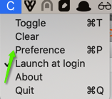
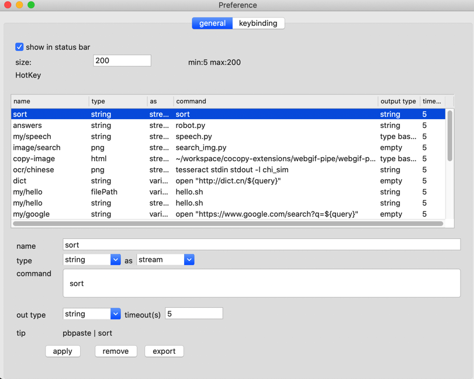

教程
什么是cocopy 意思为： Cool Copy
目的是使剪切板的管理，简单、高效、强大
期亮点是，可以对剪切板上面内容进行操作，以及支持调用外部命令。
使用户可以使用强大的命令行工具组合使用
基础使用
command (⌘) + shift (⇧) + cto popup Cocopy or click on its icon in the menu bar.- Type what you want to find.
- To select the history item you wish to copy, press ENTER, or click the item
- To delete the history item, press
OPTION (⌥) + DELETE (⌫).

扩展

选择 Preference 调出偏好设置

当前版本支持的类型为:
| 类型 | 说明 |
|---|---|
| string | 文本类型 |
| png | 图片类型(png,tiff,图片文件等)都转为png 格式输出 |
| fileUrl | 格式为 file:///path/path2/filename.png |
| filePath | 格式为 /path/path2/file.png |
| html | html 原文 |
as 后面则是选择以什么方式传递给命令
| 方式 | 说明 |
|---|---|
| stream | 以流的形式输出,等价于 : pbpaste | hello.sh |
| streamln | 以流的形式输出,等价于 : echo "$(pbpaste)" | hello.sh |
| variable | 以环境变量,等价于 : query="$(pbpaste)" hello.sh |
| variable.query_string | 以环境变量,等价于 : query="$(pbpaste | encodeURIComponent)" | hello.sh |
| base64 | 以base64形式输出,等价于: pbpaste | base64 | hello.sh |
| type base64 | 以类型+空格+base64 形式输出,等价于:echo $type "$(pbpaste | base64)" |hello.sh |
command: 为需要调用的命令,目前版本不支持直接在这里使用管道
out type: 输出到剪切板的类型
| 类型 | 备注 |
|---|---|
| string | 输出文本类型 |
| tiff | 输出tiff |
| png | 输出png 格式 |
| type base64 | 返回类型 值的base64 |
| empty | 无任何返回 |
命令功能
当开头为:时，直接执行后面命令，将标准输出复制到剪切板
比如输入
:ps
然后选择列表提示项
自定义按键